<nav class="navbar navbar-light " id="top-navbar">
    <div class="container-fluid"></div>
    <button class="navbar-profile" id="back-btn" onclick="backToPrevious()">
        <div><a class="nav-link" href="#">Back</a></div>
    </button>
    <button class="navbar-profile">
        
        <div><a class="nav-link" href="../profile.html">Profile</a></div>
    </button>
    </div>
</nav>